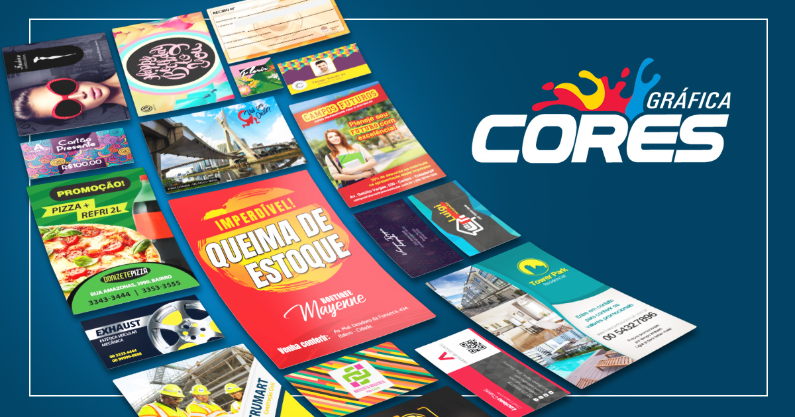

Portifólio
- 
Quem somos
A Printi entrou na indústria gráfica brasileira, em 2012, com o intuito de quebrar o status quo de falta de transparência e eficiência no processo de customização de produtos impressos. Para isso, conta com as mais modernas ferramentas do setor de Web2Print que simplificam e agilizam o complexo processo de encomenda de materiais personalizados. Desde a sua chegada no mercado, a Printi tem se atualizado constantemente e segue inovando para atender públicos dos mais variados perfis e segmentos: desde pessoas físicas, passando por empreendedores, pequenos e médios empresários até grandes corporações e multinacionais. Entre as integrantes do maior grupo de gráficas online do mundo, a Cimpress, a Printi é a gráfica que mais cresce na América Latina. Em seu terceiro ano de atuação aumentou em 6x o número de funcionários CLTs, entrou para a lista das maiores gráficas do Brasil (pela ABIGRAF) e das 20 com maior faturamento no Brasil. Na Printi, o cliente encontrará uma equipe dinâmica, focada e determinada a dar a todos a oportunidade de personalizar o material de maneira rápida e fácil a um baixo custo